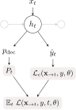

Early Classification of Time Series
Early classification of time series is the task of performing a classification as early as possible for an incoming time series.
I have worked on two methods for this task. The first one is a slight improvement over (Dachraoui, Bondu, & Cornuéjols, 2015) and the second one relies on a representation-learning strategy.
Optimizing a Composite Loss for Early Classification
(Dachraoui, Bondu, & Cornuéjols, 2015) introduces a composite loss function for early classification of time series that balances earliness and accuracy.
The cost function is of the following form:
\begin{equation} \mathcal{L}(\mathbf{x}{\rightarrow t}, y, t, \boldsymbol{\theta}) = \mathcal{L}_c(\mathbf{x}{\rightarrow t}, y, \boldsymbol{\theta}) + \alpha t \label{eq:loss_early} \end{equation}
where $\mathcal{L}_c(\cdot,\cdot,\cdot)$ is a classification loss and $t$ is the time at which a decision is triggered by the system. In this setting, $\alpha$ drives the tradeoff between accuracy and earliness and is supposed to be a hyper-parameter of the method.
The authors rely on (i) a clustering of the training time series and (ii) individual classifiers $m_t(\cdot)$ trained at all possible timestamps, so as to be able to predict, at time $t$, an expected cost for all times $t + \tau$ with $\tau \geq 0$:
\begin{equation} f_\tau(\mathbf{x}{\rightarrow t}, y) = \sum_k \left[ P(C_k | \mathbf{x}{\rightarrow t}) \sum_i \left( P(y=i | C_k) \left( \sum_{j \neq i} P_{t+\tau}(\hat{y} = j | y=i, C_k) \right) \right) \right] + \alpha t \label{eq:dachraoui} \end{equation}
where:
- $P(C_k | \mathbf{x}{\rightarrow t})$ is a soft-assignment weight of $\mathbf{x}{\rightarrow t}$ to cluster $C_k$;
- $P(y=i | C_k)$ is obtained from a contingency table that stores the number of training time series of each class in each cluster;
- $P_{t+\tau}(\hat{y} = j | y=i, C_k)$ is obtained through training time confusion matrices built on time series from cluster $C_k$ using classifier $m_{t+\tau}(\cdot)$.
At test time, if a series is observed up to time $t$ and if, for all positive $\tau$ we have $f_\tau(\mathbf{x}{\rightarrow t}, y) \geq f_0(\mathbf{x}{\rightarrow t}, y)$, then a decision is made using classifier $m_t(\cdot)$.
Limitations of the clustering
Note. This unpublished note is part of François Painblanc’s PhD work. We are co-supervising François together with Laetitia Chapel and Chloé Friguet.
Relying on Equation \eqref{eq:dachraoui} to decide prediction time can be tricky. We show in the following that in some cases (related to specific configurations of the training time confusion matrices), such an approach will lead to undesirable behaviors.
Using Bayes’ rule, Equation \eqref{eq:dachraoui} can be re-written
\begin{eqnarray}
f_\tau(\mathbf{x}{\rightarrow t}, y) &=&
\sum_k P(C_k | \mathbf{x}{\rightarrow t})
\sum_i
\sum_{j \neq i} P_{t+\tau}(\hat{y} = j, y=i | C_k)
+ \alpha t
&=&
\sum_k P(C_k | \mathbf{x}{\rightarrow t})
\underbrace{\sum_i 1 - P{t+\tau}(\hat{y} = i, y=i | C_k)}{A{t+\tau}(C_k)}
+ \alpha t
\end{eqnarray}
where $A_{t+\tau}(C_k)$ is the sum of off-diagonal elements in the (normalized) training time confusion matrix built from time series in cluster $k$ using classifier $m_{t+\tau}(\cdot)$.
In practice, this means that if the sum of off-diagonal elements of confusion matrices is equal to the same $A_{t+\tau}$ for all clusters, then this method will make a decision on the most adequate prediction time without taking the data $\mathbf{x}_{\rightarrow t}$ into account:
\begin{eqnarray}
f_\tau(\mathbf{x}{\rightarrow t}, y) &=&
\sum_k P(C_k | \mathbf{x}{\rightarrow t})
A_{t+\tau}
+ \alpha t
&=&
A_{t+\tau} + \alpha t
\end{eqnarray}
In other words, for this method to adapt the decision time $t$ in a data-dependent fashion, it is important that accuracy differs significantly between clusters, which is a condition that is difficult to ensure a priori.
Pushing the Method to the Limit Case
In (Tavenard & Malinowski, 2016), we pushed this method to its limit case where the number of clusters is equal to the number of training time series. In this case, the limitation exposed above does not hold anymore.
We showed superior loss optimization capabilities with this approach, at the cost of a larger computational complexity.
We also showed that in order to limit inference time complexity, one could learn a decision triggering classifier that, based on the time series $\mathbf{x}{\rightarrow t}$, predicts whether a decision should be triggered or not. In this setting, the target values $\gamma_t$ used to train this _decision triggering classifier were computed from expected costs $f_\tau$ presented above:
\begin{equation}
\gamma_t(\mathbf{x}{\rightarrow t}, y) = \left{
\begin{array}{l}
1 \text{ if } f{0}(\mathbf{x}{\rightarrow t}, y) =
\min{\tau \geq 0} f_{\tau}(\mathbf{x}_{\rightarrow t}, y)
0 \text{ otherwise. }
\end{array} \right.
\end{equation}
In other words, decision making is here seen as a two-step process where a first classifier (decision triggering classifier) decides whether a decision should be made, in which case a second classifier is used to determine the class to be predicted (the latter classifier is $m_t(\cdot)$, the same as for other methods).
Representation Learning for Early Classification
Note. This work is part of Marc Rußwurm’s PhD work. Marc is a PhD student from TU Munich who came to France for a 4-month period in 2018-2019. I was co-supervising Marc with Nicolas Courty and Sébastien Lefèvre during his stay.
The previous approach has several shortcomings. First, it requires to learn a classifier $m_t(\cdot)$ for each possible time series length $t$, which is very costly. Second, both classifiers (the one that decides whether a decision should be made, and the one that actually makes the decision) are seen as independent models, while they are, in practice, closely related. Finally, the loss function presented in Equation \eqref{eq:loss_early} requires a careful choice of hyper-parameter $\alpha$ that might not be easy to determine in practice.
We have hence proposed a representation learning framework that addresses these three limitations (Rußwurm et al., 2019).
In more detail, we rely on a feature extraction module (that can either be made of causal convolutions or recurrent submodules) to extract a fixed-sized representation $h_t$ from an incoming time series $\mathbf{x}_{\rightarrow t}$. An important point here is that this feature extractor should operate on time series whatever their length (and hence a different feature extractor need not to be learned for each time series length). Then, this feature is provided as input to two different heads, as shown in the following Figure (in which grey cells correspond to quantities that are computed from the model outputs):

- The first head (left) outputs a probability $p_\text{dec}$ of making a decision at time $t$ given that no decision has been made before: it plays the same role as the decision triggering classifier presented above and from the series of $p_\text{dec}$ values, one can compute the probability $P_t$ of making a decision at time $t$;
- The second head is the standard classification head that effectively produces a classification if the first head triggered it.
Hence, provided that we have a differentiable early classification loss function, we are able to learn all parameters of this model end-to-end. Our last contribution in this context is the design of a loss function that does not lead to dumb optimal solutions (e.g. trigger all classifications at the first time stamp, whatever the data). We introduced the following loss function:
\begin{equation} \mathcal{L}(\mathbf{x}{\rightarrow t}, y, t, \boldsymbol{\theta}) = \alpha \mathcal{L}_c(\mathbf{x}{\rightarrow t}, y, \boldsymbol{\theta}) - (1-\alpha) P_\boldsymbol{\theta}(m_t(\mathbf{x}_{\rightarrow t})=y) \left( \frac{T-t}{T} \right) \end{equation}
where $P_{\boldsymbol{\theta}}(m_t(\mathbf{x}{\rightarrow t})=y)$ is the probability (as assigned by the classification model) to generate $y$ as an output and $T$ is the total length of the time series (_i.e. the maximum timestamp at which a decision can be made). The second part in this loss function is an earliness reward, which is taken into account iff the provided decision is sound (i.e. the correct class is predicted with non-zero probability). When the decision time is drawn from the multinomial distribution of parameters ${P_t}{t \in [0, T-1]}$, the overall loss is now: \begin{equation} \mathbb{E}{t \sim \mathcal{M}(P_0, \dots , P_{T-1})} \mathcal{L}(\mathbf{x}_{\rightarrow t}, y, t, \boldsymbol{\theta}) \end{equation} and gradients can be back-propagated through both heads of the model, hence allowing to jointly learn the early decision mechanism and the predictor.
We have shown that this model outperforms all known baselines in terms of both time complexity and earliness/accuracy tradeoff, especially for large scale datasets. Moreover, we have presented an application of this model to the monitoring of agriculture, and demonstrated its ability to trigger class-specific early decisions in this context in (Rußwurm, Tavenard, Lefèvre, & Körner, 2019).
References
- Dachraoui, A., Bondu, A., & Cornuéjols, A. (2015). Early classification of time series as a non myopic sequential decision making problem. In Proceedings of the European Conference on Machine Learning and Principles and Practice of Knowledge Discovery (pp. 433–447). Springer.
- Tavenard, R., & Malinowski, S. (2016). Cost-Aware Early Classification of Time Series. In Proceedings of the European Conference on Machine Learning and Principles and Practice of Knowledge Discovery (pp. 632–647). Riva del Garda, Italy.
- Rußwurm, M., Lefevre, S., Courty, N., Emonet, R., Körner, M., & Tavenard, R. (2019). End-to-end Learning for Early Classification of Time Series.
- Rußwurm, M., Tavenard, R., Lefèvre, S., & Körner, M. (2019). Early Classification for Agricultural Monitoring from Satellite Time Series. In AI for Social Good Workshop at International Conference on Machine Learning (ICML). Long Beach, United States.